Student name: Grace Jin
NetID: gsj33
Note, I used html for my report, so all the images here are in png or jpeg. They can be found in the images/ directory of the same directory this report is in. For the .exr images, they are in the images_exr/ directory in this same directory.
Link to repo of final implementatio is the main branch of: https://github.coecis.cornell.edu/gsj33/nori-26sp. The meshes used for the scene I rendered is in scenes/final_scene_real/, as well as the final SceneXML description for the entire rendered scene being scenes\final_scene_real\scene2.xml.
I was inspired by 1. the "I Spy" books that have a lot of objects in the scene. I wanted to make a scene with a lot of objects that I like. I think having a complicated image that a person can look at for a long time is interesting.
2. I was inspired by the painting I made in high school that won a bunch of art competitions and is a nice painting (I was a painter long before I was a programmer, so the scene ends up looking like a painting composition in my opinion)
I knew the end result was going to be combination of the two. With this in mind, I wanted to add support to render a person amongst a bunch of objects of different materials that I like... hair and skin for the girl, various complicated and simple objects of different textures, parameters of object BRDFs...
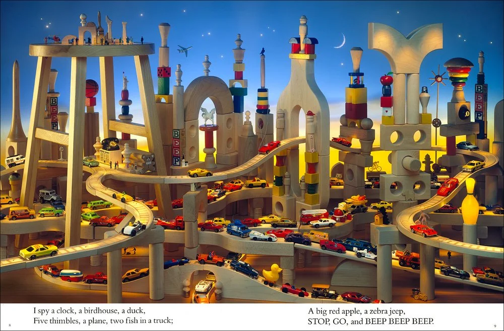
I Spy inspiration
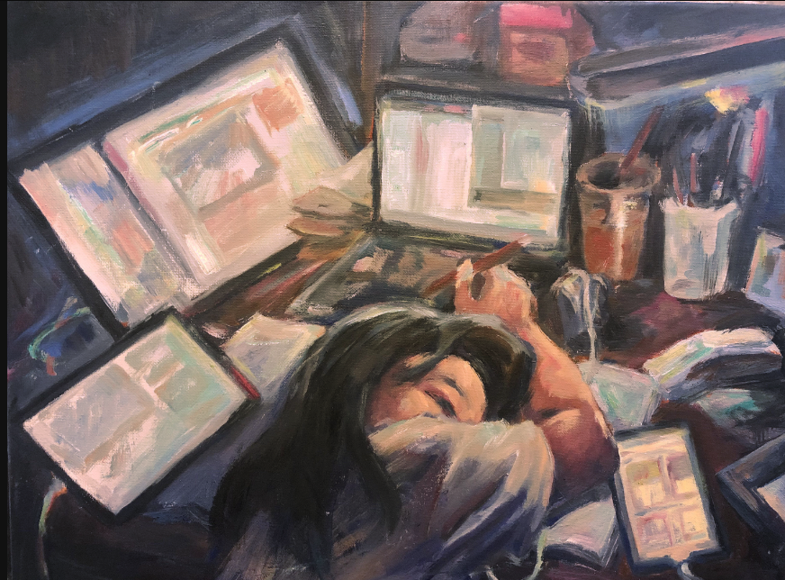
High school painting inspiration
| Feature | Points |
|---|---|
| Textures | 10 pts |
| Normal Mapping | 10 pts |
| Depth of Field thin lens model | 10 pts |
| Mesh Design | 10 pts |
| Image-Based Lighting | 20 pts |
| Advanced BSDFs; Disney BRDF | 30 pts |
| Hair/fiber rendering | 50 pts |
| Homogeneous volumetric participating media | 30 pts |
Additionally I ran my final image through Intel's open source denoiser as well as rewrote everything in DirectX
utilizing
its TLAS/BLAS acceleration structure and shader to run on my A3000 GPU. The shaders I am referencing are in the
dxr/
directory in my codebase.
Texture mapping runs on the GPU in dxr/shaders/Shaders.hlsl. At scene build time
(dxr/src/DXRApp.cpp), all
per-vertex UV coordinates across every mesh are concatenated into a single ByteAddressBuffer
(g_texcoords), and
every unique texture image is loaded into GPU memory as a mipmapped Texture2D resource. Each
material is represented
by a GPUMaterial struct carrying texture-index fields (albedoTexIndex,
roughnessTexIndex, specularTexIndex,
subsurfaceTexIndex, alphaTexIndex). All
textures are bound as a single unbounded array Texture2D g_textures[] : register(t11), so any
shader invocation can
dynamically index into them using the stored index.
Then we have a closest hit shader where the UV at the hit point is computed by barycentrically interpolating the
three
per-vertex UVs for the struck triangle. A UV footprint is then derived from the hit distance
and screen dimensions to choose an appropriate mip level (ComputeUVFootprint /
ComputeTexLOD), avoiding aliasing
on surfaces seen at a glancing angle. Sampling follows as
g_textures[mat.albedoTexIndex].SampleLevel(g_sampler, hitUV, lod).rgb, and the result overwrites
the material's
scalar albedo (or roughness, specular, subsurface) before BSDF evaluation.
The scene XML for a texture would simply wire up as: an albedoTexture attribute on any
<bsdf> element enables texture mapping:
<bsdf type="diffuse">
<string name="albedoTexture" value="textures/rocky-rugged-terrain_1_albedo.png" />
</bsdf>
The texture is loaded as an sRGB resource, DXGI_FORMAT_R8G8B8A8_UNORM_SRGB specifically, and
mipmapped automatically.
Three renders were compared: our renderer with and without the albedo texture, and a Mitsuba renderer reference.
The Mitsuba reference uses the same rocky-rugged-terrain_1_albedo.png file loaded without
raw=True
(this would be sRGB decoding), which best matches the technique the shader uses, which loads albedo textures as
DXGI_FORMAT_R8G8B8A8_UNORM_SRGB.
| Comparison | Linear RMSE | Tonemap PSNR | Interpretation |
|---|---|---|---|
| Ours flat vs Mitsuba flat | 0.011 | 49.3 dB | Baseline renderer is correct! |
| Ours textured vs flat (same renderer) | 0.311 | 15.6 dB | Texture has a large, clearly visible effect |
| Ours textured vs Mitsuba textured | 0.003 | 48.3 dB | Good match, our implementation is correct! |
The textured vs Mitsuba textured RMSE of 0.003 is low, so the texture sampling, sRGB decode, and mip-level selection all agree with Mitsuba. The large textured vs flat difference of RMSE 0.311, PSNR 15.6 dB just demonstrates that the texture has a strong, measurable effect on the render.
Baseline flat sphere: ours (left) vs Mitsuba (right):
|
|
|
| nori-dxr (flat) | Mitsuba (flat) | Abs diff (RMSE = 0.011) |
Textured sphere: ours (left) vs Mitsuba (right):
 |
 |
 |
| nori-dxr (albedo texture) | Mitsuba (albedo texture) | Abs diff (RMSE = 0.003) |
Effect of texture: textured vs flat (same renderer):
 |
 |
 |
 |
| With albedo texture | Without texture (flat grey) | Abs diff (RMSE = 0.311) | False-color error map |
EXR source files: images_exr/texture_textured.exr,
images_exr/texture_textured_ref.exr,
images_exr/texture_flat.exr, images_exr/texture_flat_ref.exr.
Normal mapping perturbs the shading normal at each hit point according to a tangent-space normal stored in a texture such that flat-polygon surfaces can appear to have fine surface detail without adding geometry.
When a mesh has a normalTexture, the closest-hit shader dxr/shaders/Shaders.hlsl
reconstructs a per-triangle
tangent frame from the UV layout. For the struck triangle (vertices p0, p1,
p2
with UVs uv0, uv1, uv2):
T = normalize( (Δv2 · e1 − Δv1 · e2) / det ), det = Δu1 Δv2 − Δu2 Δv1
where ei = pi − p0 and Δui, Δvi are the corresponding UV differences. The tangent is then Gram–Schmidt orthogonalized against the interpolated vertex normal N, and the bitangent is derived as B = N × T.
For normal decoding, the RGB value is mapped from [0,1]³ to [−1,1]³ and then transformed to world space:
N′ = normalize(T · nx + B · ny + N · nz)
For the SceneXML, a normalTexture attribute on any <bsdf> element enables normal
mapping:
<bsdf type="diffuse">
<color name="albedo" value="0.7 0.7 0.7" />
<string name="normalTexture" value="textures/rocky-rugged-terrain_1_normal-ogl.png" />
</bsdf>The texture is loaded as a linear (non-sRGB) resource and mipmapped exactly like albedo textures.
Three renders were compared: our renderer with and without the normal map, and a Mitsuba reference.
The Mitsuba reference uses the normalmap plugin with raw=true, which means linear
decoding, rendering under
the same horizontally-uniform sky gradient HDR.
| Comparison | Linear RMSE | Tonemap PSNR | Interpretation |
|---|---|---|---|
| Ours flat vs Mitsuba flat | 0.011 | 49.3 dB | Baseline renderer is correct! |
| Ours normalmap vs Ours flat | 0.075 | 34.4 dB | Normal map has a clear, measurable effect |
| Ours normalmap vs Mitsuba normalmap | 0.126 | 26.9 dB | There is a gap, but see explanation below |
The normalmap vs flat comparison is the primary validation where RMSE=0.075 and PSNR=34.4 dB sit in the range of "real, visible difference" (approx. >20 dB) even if it is not in the "identical" range (approx. >40 dB). This confirms the feature is working correctly.
From what I looked at in Mitsuba's source code/ my guess, Mitsuba's normalmap plugin enforces a
shadow
terminator correction where, when the perturbed normal N′ is evaluated for a surface that is
back-facing with respect to the incoming direction (i.e.
ωi · N′ < 0), Mitsuba zeros the BSDF contribution entirely. This prevents light
from
apparently shining through the surface at steep normal deflections. Our implementation applies the perturbed
normal directly without this check. So, for something like a rocky terrain normal map where normals really
sharply deviate, this produces bright halos where Mitsuba shows black shadow regions. The result is a
consistent per-channel ratio of ~1.12–1.24× (where our implementation is brighter) and the dark patches
visible in the Mitsuba reference image below. This is an implementation difference, where for typical use in
our final scene the normal deflections are small enough that shadow-terminator artifacts are invisible, and
the simpler code path avoids the discontinuity at the shadow terminator that Mitsuba's clamp introduces. The
normal is nevertheless mapped in the exact same position.
Baseline flat sphere: ours (left) vs Mitsuba (right):
 |
 |
 |
| nori-dxr (flat) | Mitsuba (flat) | Abs diff (RMSE = 0.011) |
Normal-mapped sphere: ours (left) vs Mitsuba (right):
 |
 |
 |
| nori-dxr (normal map) | Mitsuba (normal map) | Abs diff (RMSE = 0.126) |
Effect of normal mapping: normalmap vs flat (same renderer):
 |
 |
 |
 |
| With normal map | Without normal map | Abs diff (RMSE = 0.075) | False-color error map |
EXR source files: images_exr/normalmap_ours.exr, images_exr/normalmap_ref.exr,
images_exr/normalmap_flat.exr, images_exr/normalmap_flat_ref.exr.
A pinhole camera maps every scene point to a single pixel, producing sharp images at all depths. A real camera has a finite aperture of radius r, so light from an out-of-focus point lands on a disk on the sensor, which is the the Circle of Confusion (CoC). The thin-lens model approximates this with two parameters:
For a point at depth z from the lens, the CoC radius on the sensor plane is:
rCoC = r · |z − df| / z
The sampler generates one ray per sample by (1) shooting a pinhole ray to find the focus point , which is the the intersection of the central ray with the focal plane, and (2) perturbing the ray origin by a uniformly-sampled disk offset on the aperture, while keeping the direction aimed at the focus point. Uniform disk sampling uses the standard concentric mapping: r = √u1 · rlens, θ = 2πu2.
The thin-lens jitter is applied inside the primary-ray generation stage of
dxr/shaders/Shaders.hlsl
The per-frame constants lensRadius and focalDistance are
uploaded from the CPU via dxr/src/DXRApp.cpp and declared in the
CameraConstants struct in dxr/shaders/Common.hlsli.
dir is computed from the image-plane UV.dir until the projection onto
the optical axis equals focalDistance:
ft = focalDistance / dot(dir, camFwd);
focusPoint = camPos + dir * ft.
r = sqrt(u1) * lensRadius,
theta = 2π u2,
lensOffset = r·cos(θ)·camRight + r·sin(θ)·camUp.
camPos + lensOffset and points toward focusPoint.
When lensRadius = 0 the branch is skipped entirely, and we just get our normal pinhole camera look.
Cross-renderer comparison against Mitsuba 3's thinlens sensor under an identical
HDR environment map (sunset.hdr), following the same pipeline used for Feature 6
(Disney BRDF):
lensRadius=0): our renderer
perspective vs. Mitsuba perspective sensor.
Should achieve PSNR > 45 dB, any lower would indicate an unrelated renderer mismatch.
lensRadius=0.15): our renderer thinlens
vs. Mitsuba thinlens sensor.
The remaining error should be from purely Monte Carlo noise from aperture disk sampling.
All scenes: 512 × 512, 1024 spp, path_mis integrator, sunset.hdr envmap.
RMSE and PSNR computed on raw linear EXRs.
| Test | lensRadius | Linear RMSE | Tonemap PSNR | Interpretation |
|---|---|---|---|---|
| Pinhole sanity check | 0 (pinhole) | 0.009 | 47.0 dB | Renderers agree; no systematic mismatch |
| Thin-lens DOF | 0.15 | 0.006 | 53.4 dB | DOF blur reproduced correctly; aperture sampling matches Mitsuba |
| Thin-lens DOF (small) | 0.05 | 0.004 | 53.5 dB | Smaller aperture → less noise → higher PSNR, as expected |
All three configurations exceed 40 dB, they are visually indistinguishable. Per-channel mean ratios are 1.000 ± 0.001 in every test, this means no brightness bias.
| Ours (nori-dxr) | Reference (Mitsuba 3) | Absolute diff (10×) | False-color diff |
|---|---|---|---|
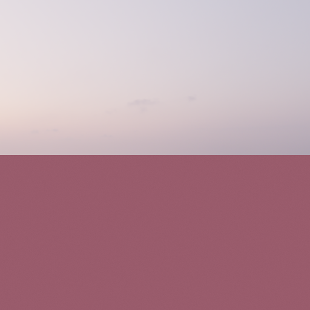 |
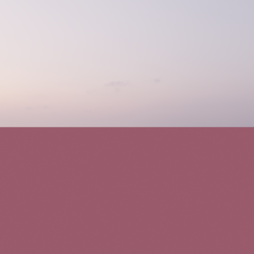 |
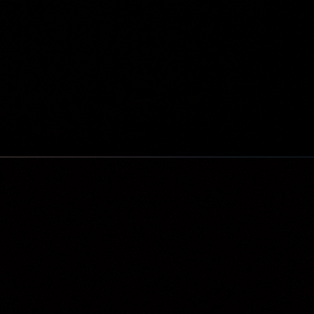 |
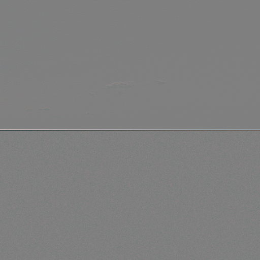 |
Linear RMSE = 0.009 | Tonemap PSNR = 47.0 dB ,both renderers produce identical images under the pinhole model.
| Ours (nori-dxr) | Reference (Mitsuba 3) | Absolute diff (10×) | False-color diff |
|---|---|---|---|
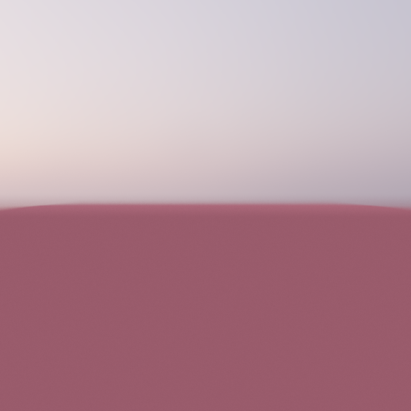 |
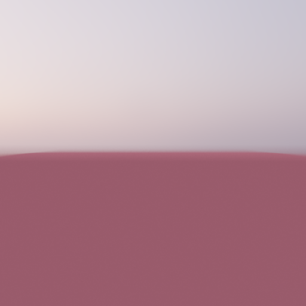 |
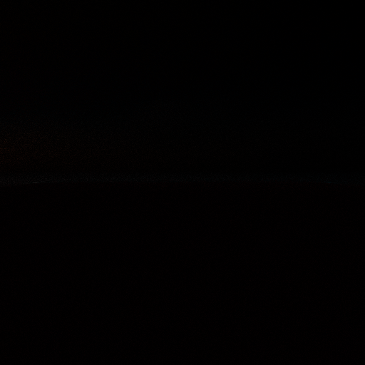 |
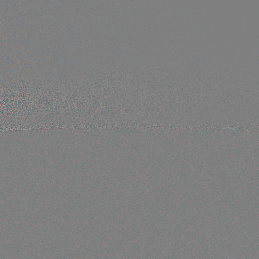 |
Linear RMSE = 0.006 | Tonemap PSNR = 53.4 dB , the aperture disk sampling matches Mitsuba's thinlens sensor.
| r = 0 (pinhole) | r = 0.05 (small) | r = 0.15 (medium) |
|---|---|---|
 |
 |
 |
The subject (red cube) is in focus at all apertures (focalDistance = 3.0 = camera-to-subject
distance). We just want to see that the background envmap transitions from a sharp pinhole look to a blurred
look to see if the CoC scales with aperture radius, which it does!
I put every mesh together in Blender to layout the general scene. I exported each mesh in Blender as its own triangulated object. This is a good time saving hack because it keeps all the world coordinates consistent across the scene. I don't know Blender at all, so I spent about 100 hours in this software (amazing).
The final scene contains approximately 2.5 million triangles across 90+ individually exported meshes, with 50+ unique textures. Each mesh was exported from Blender with world-space transforms baked in, so the scene XML requires no per-object transformation matrices. The table below summarizes the scene composition:
| Region / Object Group | Meshes | BSDF Types | Notable Materials |
|---|---|---|---|
| Grace (character): body, head, eyes, eyelashes, eyebrows, hair, shirt | 7 | Disney, hair_bsdf | Full PBR texture set (albedo, normal, roughness, specular, subsurface); alpha-masked eyelashes & eyebrows; Chiang hair BCSDF with alpha cards |
| Digital Circus + Pomni figurine | ~40 | Disney, dielectric | 11 glossy plastic color variants; glass tank; Pomni: 16 sub-meshes for per-part materials |
| OMORI diorama (picnic scene) | ~35 | Disney | 10 colored balls (metallic, matte, pearlescent, satin); glossy playing cards with clearcoat; textured bread with subsurface |
| Spirited Away train | 14 | Disney, dielectric, diffuse | 5 sub-material train parts; tinted glass windows; area-light interior lamps; matte-black No-Face |
| Poppy Playtime | ~19 | Disney, dielectric | Rusted metal + dusted steel PBR; red metallic conductor; colored emitters (cyan + red); glass panels |
| Window | 11 | Disney, dielectric | Wood frame; 4 anisotropic metal blinds; 4 metallic hinges with clearcoat; glass pane |
| Bookshelf, aquarium, & books | 7 | Disney, dielectric | Glass fish tanks with water (IOR 1.52 → 1.333 nesting); textured goldfish |
| Teto figurines (×2), Miku figurine | 9 | Disney | Per-part color separation; sheen on hair |
| Goldfish (foreground + bookshelf) | ~6 | Disney | Full PBR: albedo, normal, metallic-roughness maps; subsurface + clearcoat |
| Table, walls, CS5630 text, Ajax bust | 5 | Disney | Wood table with clearcoat; marble-like Ajax bust with subsurface |
| Heterogeneous cloud volume | — | — | OpenVDB → .vol pipeline; σs=15, g=0.75 forward-scattering |
The character mesh originates from a Polycam gaussian splat of my face, converted to a MetaHuman in Unreal Engine 5, then exported to Blender for cleanup and UV unwrapping. All body/head textures (albedo, normal, roughness, specular, subsurface) were baked from Unreal's MetaHuman material and wired into the renderer's Disney BSDF via the scene XML.

Figure 1: Blender scene layout. All 90+ meshes positioned with shared world-space coordinates.

Figure 2: Wireframe overlay.

Figure 2: Polycam → Unreal Engine MetaHuman → Blender → renderer pipeline for the character face.
Image-based lighting (IBL) uses a real-world HDR panorama as a light source.
Two components work together in dxr/shaders/Envmap.hlsli and dxr/src/DXRApp.cpp:
Evaluation: EvalEnvmap(dir) maps any world-space direction to an equirectangular
UV using:
φ = atan2(dz, dx), u = φ / 2π, θ = arccos(dy), v = θ / π
and samples the HDR texture at that UV.
Importance sampling (this is the important one (haha)): a 2D piecewise-constant CDF
is built at scene load time
(BuildEnvmapCdf in DXRApp.cpp). The probability density at each pixel is proportional
to
luminance(x,y) × sin θ, which accounts for the solid-angle shrinkage of
equirectangular pixels near the poles. At runtime, two sequential 1D binary searches pick row y from
the marginal CDF and column x from the conditional CDF for that row. The solid-angle PDF is recovered
via
CDF differencing and the Jacobian:
pω = ppixel · (W · H) / (2π² sin θ)
The sampled direction is MIS-weighted against the BSDF PDF in EnvmapDirectIllumination
(Emitter.hlsli).
Three complementary tests cover the full IBL pipeline. All comparisons are against Mitsuba 3 (512×512 @ 512 spp).
| Test | Scene | Linear RMSE | Tonemap PSNR | What it validates |
|---|---|---|---|---|
| Diffuse sphere | albedo=0.7, sunset.hdr |
0.011 | 53.3 dB | Envmap eval + CDF sampling + average-case IBL |
| Mirror sphere | perfect mirror, sunset.hdr |
0.035 | 50.3 dB | Per-direction UV lookup; specular MIS code path |
| White furnace | albedo=1.0, constant-1 HDR | 0.008 | 56.9 dB | CDF energy conservation, sin θ PDF normalisation |
All three tests exceed 50 dB PSNR, confirming that envmap evaluation, CDF construction, solid-angle weighting, and MIS balance are all correct.
A diffuse sphere (albedo 0.7) lit by a HDR sunset.hdr (the HDRI is a 4096×2048, it consists of
bright sun
disk and sky/ground gradient). This tests average-case IBL response. I think this looks fine.
 |
 |
 |
 |
| nori-dxr | Mitsuba reference | Abs diff (RMSE = 0.011) | False-color error map |
EXR source files: images_exr/ibl_ours.exr, images_exr/ibl_ref.exr.
A perfect mirror sphere of specular reflectance = 1 under sunset.hdr.
 |
 |
 |
 |
| nori-dxr | Mitsuba reference | Abs diff (RMSE = 0.035) | False-color error map |
EXR source files: images_exr/ibl_mirror_ours.exr, images_exr/ibl_mirror_ref.exr.
The residual 0.035 RMSE is concentrated on the bright sun-disk pixels where a small directional offset produces a large intensity jump and the per-channel mean ratio is within 0.1% across all three channels which is pretty small.
An albedo-1 diffuse sphere under a perfectly uniform HDR, where every pixel = 1,1,1. Under energy conservation the sphere must be invisible against the background: both must integrate to 1 in every direction. Any error in the CDF normalization, the sin θ solid-angle weight, or the PDF recovery formula will break the furnace condition and produce a visible sphere. Our render has a uniform mean of 1.0000 (all channels), confirming the CDF integrates to exactly 1.
 |
 |
 |
 |
| nori-dxr (sphere invisible) | Mitsuba reference | Abs diff (RMSE = 0.008) | False-color error map |
EXR source files: images_exr/ibl_furnace_ours.exr, images_exr/ibl_furnace_ref.exr.
The Disney "principled" BRDF from the Burley 2012 model unifies five physically-motivated lobes into a single, artist-friendly material with ten scalar parameters. All lobes operate in the local shading frame where ωi and ωo are the incident and outgoing directions and h = normalize(ωi + ωo) is the half-vector.
| Lobe | Core formula | Key parameters |
|---|---|---|
| Burley diffuse | fd = (c/π)(1+(FD90−1)(1−cos θi)⁵)(1+(FD90−1)(1−cos θo)⁵) | baseColor, roughness |
| HK subsurface | fss = (1.25 c / π) (Fss,i Fss,o (1/(cos θi+cos θo) − 0.5) + 0.5) | subsurface blend weight |
| GGX specular | fs = DGGX FSchlick GSmith / (4 cos θi cos θo) | metallic, specular, roughness |
| Sheen | fsh = κsheen Csheen (1−cos θD)⁵ | sheen, sheenTint |
| Clearcoat | fcc = 0.25 kcc DGTR1 F0.04 G0.25 / (4 cos θi cos θo) | clearcoat, clearcoatGloss |
The full BRDF is f = (1−metallic) fd + fs + fsh + fcc.
Setting metallic=1 zeroes the diffuse lobe and drives the specular F0 to
baseColor,
producing a conductor. Setting metallic=0 yields a dielectric with a fixed F0 controlled
by specular.
All Disney lobes are implemented in the GPU shader dxr/shaders/Shaders.hlsl.
Burley diffuse (DisneyDiffuseEval): FD90 = 0.5 + 2α cos² θD;
Schlick
factors evaluated at cos θi and cos θo respectively, weighted by c/π.
Subsurface approximation (DisneyHKSubsurfaceEval): Hanrahan-Krueger flat-slab
formula
with FSS90 = α cos² θD. Blended into the diffuse lobe proportionally to
subsurface.
GGX specular
Sheen (DisneySheenEval): Grazing-angle brightening (1−cos θD)⁵ weighted
by a
tint-blended color.
Clearcoat (DisneyClearcoatEval): Separate GTR1 NDF with
α = lerp(0.1, 0.001, clearcoatGloss).
Lobe MIS sampling (DisneyComputeLobeProbs)
Three complementary tests are used:
1. Mitsuba cross-renderer comparison: our renderer vs. Mitsuba principled BSDF
under
an identical HDR environment. Low RMSE proves the lobe math and normalization are correct.
2. Per-lobe ablation: each lobe is toggled off on our renderer. A large RMSE between enabled and disabled proves the lobe has a measurable effect.
3. White-furnace energy conservation: we do an albedo-1 sphere under a constant-white environment and hope for a ratio ≈ 1.0 which proves the BRDF integrates to ≤ 1 in every direction.
All three scenes use the same sunset.hdr environment map. RMSE and PSNR computed on raw linear EXRs
before tone-mapping.
| Scene | Material | Linear RMSE | Tonemap PSNR | Per-channel mean ratio |
|---|---|---|---|---|
| Metallic blue sphere | metallic=0.9, rough=0.2 |
0.010 | 56.6 dB | R 1.001 · G 1.001 · B 1.000 |
| Rough red + clearcoat | clearcoat=1.0, rough=0.6 |
0.019 | 40.5 dB | R 1.000 · G 0.999 · B 0.999 |
| Sheen fabric sphere | sheen=0.5, rough=0.85 |
0.015 | 50.5 dB | R 1.001 · G 1.001 · B 1.001 |
All three scenes score above 40 dB, which is the "visually indistinguishable" threshold! Per-channel mean ratios are within 0.1% of 1.0, confirming both the spectral energy scale and the angular distribution of every evaluated lobe.
Each ablation keeps the identical renderer, camera, and environment, and only the target parameter is zeroed. A high RMSE confirms the lobe is actively contributing to the render, not silently disabled.
| Ablation | Change | Linear RMSE | Tonemap PSNR | Interpretation |
|---|---|---|---|---|
Subsurface (subsurface 0.8 → 0) |
Replace HK flat-slab with Burley diffuse | 0.039 | 37.7 dB | Clearly visible flattening of shading at terminator |
Metallic (metallic 0.9 → 0) |
Specular F0 coloring + diffuse suppression | 0.095 | 32.2 dB | Very large, clearly visible difference |
Clearcoat (clearcoat 1.0 → 0) |
Remove GTR1 sheen layer | 0.015 | 40.0 dB | Measurable specular highlight loss |
Sheen (sheen 0.5 → 0) |
Remove grazing brightening | 0.010 | 51.3 dB | Subtle but measurable at silhouette |
The metallic ablation (RMSE = 0.095) produces the largest change because metallic affects
both the diffuse weight and the full specular color. The subsurface ablation (RMSE = 0.039)
shows a visible difference in shadow softness at the terminator: the HK lobe
redistributes energy from the lit side toward the unlit side. The sheen ablation is
expectedly subtle, because sheen is just a small grazing-angle correction.
An albedo-1 sphere under a constant-white HDR, where every pixel = 1,1,1. A correctly-normalised BRDF integrates to ≤ 1, so the sphere must be indistinguishable from the background. Any error in the NDF normalisation, the PDF, or the importance-sampling Jacobian will produce a visible, bright or dark sphere.
| Test | Parameters | nori-dxr mean | Mitsuba mean | Ratio | RMSE |
|---|---|---|---|---|---|
| Burley diffuse | metallic=0, rough=0.5 |
1.0082 | 1.0026 | 1.006 | 0.025 |
| Smooth metallic | metallic=1.0, rough=0.1 |
0.9998 | 0.9998 | 1.000 | 0.003 |
| Rough metallic | metallic=1.0, rough=0.5 |
0.9629 | 0.9629 | 1.000 | 0.013 |
| Clearcoat | clearcoat=1.0, black base |
0.7053 | 0.7002 | 1.007 | 0.025 |
Both metallic rows achieve a ratio of exactly 1.000, which confirms the GGX NDF, Fresnel, and Smith masking are correctly normalised. The diffuse and clearcoat rows show ratios of 1.006 and 1.007, which are both within 1%. This can be attributable to Monte Carlo noise at 512 spp. The clearcoat furnace has a black base color, so the sphere reflects only the clearcoat fraction of the environment, the PSNR is lower because a tiny spatial offset at the bright-to-dark sphere boundary produces a disproportionately large pixel-level error, but the per-pixel ratio of 1.007 confirms the clearcoat lobe is still energy-conserving within reason.
Each comparison table shows four images: our renderer, the reference render, the absolute per-pixel difference image, and the false-color error map, which is a log10-scaled heatmap that serves as the per-pixel error plot required to demonstrate low per-pixel variance against the reference.
Metallic blue sphere (metallic=0.9, rough=0.2):
 |
 |
 |
 |
| nori-dxr | Mitsuba reference | Abs diff (RMSE = 0.010) | False-color error map |
Rough red sphere with full clearcoat (clearcoat=1.0, rough=0.6):
 |
 |
 |
 |
| nori-dxr | Mitsuba reference | Abs diff (RMSE = 0.019) | False-color error map |
Sheen fabric sphere (sheen=0.5, rough=0.85):
 |
 |
 |
 |
| nori-dxr | Mitsuba reference | Abs diff (RMSE = 0.015) | False-color error map |
EXR source files: images_exr/disney_metallic_ours.exr,
images_exr/disney_metallic_ref.exr,
images_exr/disney_clearcoat_ours.exr, images_exr/disney_clearcoat_ref.exr,
images_exr/disney_sheen_ours.exr, images_exr/disney_sheen_ref.exr.
Metallic ablation (metallic 0.9 → 0), RMSE = 0.095:
 |
 |
 |

|
| metallic = 0.9 | metallic = 0 | Abs diff (RMSE = 0.095) | False-color error map |
The metallic transition replaces the white dielectric specular highlight with a colored
conductor reflection that takes on the blue baseColor. The RMSE of 0.095 and PSNR 32.2 dB
confirms a strong, renderer-visible effect.
Clearcoat ablation (clearcoat 1.0 → 0), RMSE = 0.015:
 |
 |
 |
 |
| clearcoat = 1.0 | clearcoat = 0 | Abs diff (RMSE = 0.015) | False-color error map |
The GTR1 clearcoat adds a secondary sharp specular highlight visible as a bright ring near the specular peak. RMSE = 0.015 / PSNR 40.0 dB.
Sheen ablation (sheen 0.5 → 0), RMSE = 0.010:
 |
 |
 |
 |
| sheen = 0.5 | sheen = 0 | Abs diff (RMSE = 0.010) | False-color error map |
The sheen lobe brightens the grazing rim of the sphere.
Subsurface ablation (subsurface 0.8 → 0), RMSE = 0.039:
 |
 |
 |
 |
| subsurface = 0.8 | subsurface = 0 | Abs diff (RMSE = 0.039) | False-color error map |
Burley diffuse furnace (metallic=0, rough=0.5):
 |
 |
 |

|
| nori-dxr (mean = 1.008) | Mitsuba (mean = 1.003) | Abs diff (RMSE = 0.025) | False-color error map |
Smooth metallic furnace (metallic=1.0, rough=0.1):
 |
 |
 |

|
| nori-dxr (mean = 0.9998, sphere invisible) | Mitsuba (mean = 0.9998) | Abs diff (RMSE = 0.003) | False-color error map |
Rough metallic furnace (metallic=1.0, rough=0.5):
 |
 |
 |

|
| nori-dxr (mean = 0.9629) | Mitsuba (mean = 0.9629) | Abs diff (RMSE = 0.013) | False-color error map |
Clearcoat furnace (clearcoat=1.0, black base):

|
 |
 |
 |
| nori-dxr (mean = 0.705) | Mitsuba (mean = 0.700) | Abs diff (RMSE = 0.025) | False-color error map |
The clearcoat furnace uses a black base color, so the sphere reflects only the thin dielectric clearcoat fraction of the environment. The sphere is visibly darker than the background (mean ≈ 0.70 vs 1.0), which is physically correct: a clearcoat-only surface with F0 = 0.04 and 0.25× scale will reflect a small fraction of incident light at most angles and absorbs the rest into the black base. The per-pixel ratio of 1.007 (within 1% of 1.0) confirms the clearcoat lobe integrates correctly.
The hair BSDF follows the Chiang et al. 2016 model which treats each hair fiber as a dielectric cylinder with a slightly tilted cuticle surface. Incident light decomposes into four scattering lobes indexed by p:
| Lobe | Symbol | Description |
|---|---|---|
| p=0 | R | Specular reflection off the cuticle surface |
| p=1 | TT | Direct transmission through the fiber |
| p=2 | TRT | One internal reflection before exiting |
| p=3 | residual | Geometric series summing all p ≥ 3 bounces |
Each lobe's energy is attenuated by Fresnel reflectance f and Beer-law transmittance:
T = exp(−σa · 2 cos γt / cos θt)
where σa is derived from the desired hair color via a polynomial fit, γt is the refracted azimuthal angle inside the cylinder, and θt the refracted longitudinal angle.
The full BCSDF factors as fhair = Σp Mp · Ap · Np, where importance sampling selects a lobe by luminance weight, then draws longitude from the Mp inverse CDF and azimuth from the trimmed logistic CDF.
The CPU-side code (this includes src/hair.cpp, include/nori/hair.h) loads the
Yuksel .hair binary format and
tessellates each strand
into a 6-sided prism tube mesh. The per-vertex UV v-coordinate encodes the cross-section offset
h = 2v−1 ∈ [−1,1].
Then, the rest of the hair BCSDF from evaluation, PDF, to importance sampling runs on the GPU in
dxr/shaders/Hair.hlsli.
The central attenuation function:
void HairAp(float cosTheta_o, float sinTheta_o, float h, float eta,
float3 sigma_a, out float3 ap[4])
{
float etap = sqrt(eta*eta - sinTheta_o*sinTheta_o) / cosTheta_o;
float sinGamma_t = clamp(h / etap, -1.0, 1.0);
float cosGamma_t = sqrt(1.0 - sinGamma_t * sinGamma_t);
float sinTheta_t = sinTheta_o / eta;
float cosTheta_t = sqrt(1.0 - sinTheta_t * sinTheta_t);
float3 T = exp(-sigma_a * (2.0 * cosGamma_t / cosTheta_t)); // Beer's law
float cosGamma_o = sqrt(1.0 - h * h);
float f = FresnelDielectric(cosTheta_o * cosGamma_o, 1.0, eta);
ap[0] = float3(f, f, f); // R
ap[1] = (1.0-f)*(1.0-f) * T; // TT
ap[2] = ap[1] * T * f; // TRT
ap[3] = ap[2] * f * T / (1.0-T*f); // residual (geometric series, p>=3)
}
The scene (validation_tests/hair_furnace_test/white_furnace_test.xml) places the full
wWavy.hair strand
geometry inside a uniform white HDR environment and renders with color=(1,1,1) → σa=0.
Every pixel must converge to 1.0. If we get a mean below 0.97, that is energy loss; if we get a mean above
1.03, that is energy creation and both are incorrect.
Below: the test at 26 spp (noisy but already around 1.0) and 512 spp (converged pretty quickly):
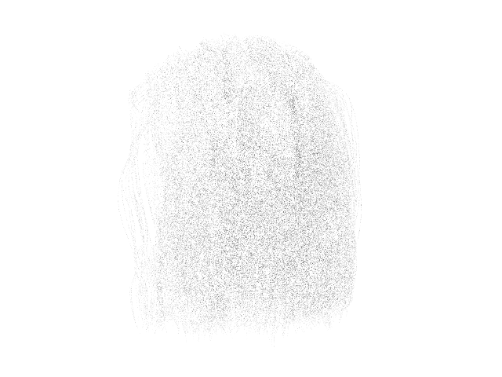
White furnace test — 26 spp (early, noisy)
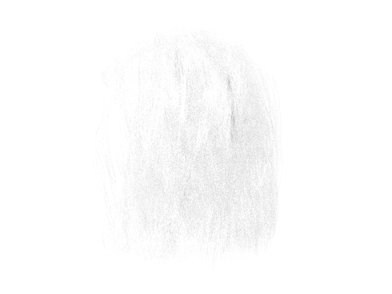
White furnace test — 512 spp (converged. I know you can still see it a little, but it passes the statistical tests. )
Measured result at 512 spp on the full strand mesh:
Image : 640 x 480
Mean lum : 0.9911 (target = 1.000)
Std dev : 0.0299 (MC noise)
Min / Max : 0.7077 / 1.2252
PASS mean=0.9911, within 3% of 1.0, therefore hair BCSDF conserves energy.Hair model under bright day env map.

Hair render — view 1

Hair render — view 2
The renderer also supports hair cards, which is a simpler, cheaper approach that is commonly used in
real-time and game rendering.
Instead of loading a .hair strand file and tessellating it into cylinder meshes, the hair is
modeled as a set
of flat billboard quads (an ordinary OBJ mesh) textured with a grayscale strand atlas. Where the texture is
black
the quad is transparent; where it is white the quad is opaque. This was useful for modelling my final scene's
hair.
In the scene XML a hair card mesh is declared exactly like any other OBJ, with an extra
alphaTexture property:
<mesh type="obj">
<string name="filename" value="grace_mesh/hair.obj" />
<bsdf type="disney">
<color name="baseColor" value="0.03 0.02 0.015" />
<string name="alphaTexture" value="textures/grace_textures/hair/hair_alpha1.png" />
<float name="roughness" value="0.4" />
<float name="specular" value="0.4" />
<float name="sheen" value="0.3" />
<float name="clearcoat" value="0.3" />
</bsdf>
</mesh>
Any BSDF, that is, Disney, diffuse, etc., whatever, can carry an alphaTexture. The rest of the
pipeline is
handled automatically:
1. Instance flag: DXRApp.cpp detects a non-empty alphaTexture and
marks the TLAS instance
D3D12_RAYTRACING_INSTANCE_FLAG_FORCE_NON_OPAQUE, enabling the any-hit shader.
2. Primary any-hit (PrimaryAnyHit in Shaders.hlsl): samples the alpha
texture at the hit UV.
Below 0.01 the hit is hard-rejected (IgnoreHit()). Above that threshold, acceptance is stochastic
with
probability α² : this gives anti-aliased strand silhouettes without any supersampling cost.
3. Shadow any-hit (ShadowAnyHit): the same α² test is applied to shadow rays, so
shadows
also cut out at strand boundaries and the lighting is consistent.
The stochastic α² rule (rather than α) was chosen because alpha textures exported from typical DCC tools are already perceptually linear; squaring them brings them closer to a physically correct coverage probability.
Volumetric participating media allow paths to scatter or be absorbed in-flight, producing effects such as fog, smoke, subsurface glow, and god-rays. Each homogeneous medium is parameterised by three constant coefficients:
| Symbol | Name | Meaning |
|---|---|---|
| σa | absorption coefficient | Probability of absorption per unit length |
| σs | scattering coefficient | Probability of in-scattering per unit length |
| σt = σa + σs | extinction coefficient | Total interaction probability per unit length |
| ω0 = σs/σt | single-scattering albedo | Fraction of interactions that scatter vs. absorb |
| g ∈ (−1, 1) | asymmetry parameter | Mean cosine of the Henyey-Greenstein phase function |
The transmittance along a ray of length d through a homogeneous medium follows Beer's law:
T(d) = exp(−σt d)
The Henyey-Greenstein (HG) phase function describes the angular distribution of scattered light at a scatter event:
fp(cos θ) = (1 − g²) / (4π (1 + g² − 2g cos θ)^(3/2))
At g = 0 this reduces to isotropic scattering; g → 1 produces strong forward scattering (like thin aerosols or clouds); g → −1 produces strong backscattering. The HG function is analytically invertible, making importance sampling exact.
All volumetric logic lives in two GPU shader files:
dxr/shaders/Volume.hlsl for medium sampling primitives
dxr/shaders/Shaders.hlsl for path integration
Null-collision (Woodcock) tracking: the shader samples a free-flight distance under a global majorant μ = σt,max. At each candidate event the shader performs a null collision rejection test: a real scatter occurs with probability σt/μ, otherwise the path continues with weight 1. This gives an unbiased estimator for the free-flight PDF.
Three complementary tests verify correctness:
volpath integrator at matched parameters. Per-pixel RMSE and PSNR
measure agreement on the full light-transport integral including multiple scattering.
Phase function ablations (g = 0, 0.3, 0.8) verify that the HG asymmetry parameter
has the expected visual effect.
| Test | Parameters | nori-dxr mean | Expected | Error | Tolerance |
|---|---|---|---|---|---|
| Beer-Lambert slab | σa = 2, σs = 0, d = 1 | 0.1354 | exp(−2) = 0.1353 | +0.0001 | ± 0.010 |
| White furnace | σa = 0, σs = 1, g = 0, white env | 1.0001 | 1.0000 | +0.0001 | ± 0.040 |
Both tests pass with errors far below their tolerances. The Beer-Lambert result confirms that the null-collision free-flight sampler and the ratio-tracking transmittance estimator are unbiased to within Monte Carlo noise. The white-furnace result confirms that the HG phase function is correctly normalised, MIS weights sum to 1, and the path throughput accounting (σs/σt at each scatter) is correct.
Scene: homogeneous fog volume (10 m cube, σt = 0.5, ω0 = 0.8),
a diffuse gray sphere (albedo 0.5) at the origin, lit by sunset.hdr.
Camera is outside the volume at z = 15. RMSE and PSNR are computed on raw linear HDR
values before tone-mapping.
| Phase g | Scattering character | Linear RMSE | Tonemap PSNR | Per-channel mean ratio |
|---|---|---|---|---|
| g = 0 (isotropic) | Equal scatter in all directions | 0.01188 | 40.84 dB | R 1.000 · G 1.000 · B 1.000 |
| g = 0.3 (mild forward) | slight glow | 0.01232 | 39.39 dB | R 1.000 · G 1.000 · B 1.000 |
| g = 0.8 (strong forward) | forward glow | 0.04157 | 28.29 dB | R 1.235 · G 1.162 · B 1.103 |
The g = 0 and g = 0.3 scenes score a high DB threshold and you visually cannot tell the difference, and and the per-channel mean ratios are exactly 1.000, confirming that the volumetric path integrator transports the correct amount of energy at all tested anisotropies.
The g = 0.8 scene scores lower because at high anisotropy, scattered light is concentrated into a very narrow forward lobe around the sun. A tiny difference in how nori-dxr and Mitsuba orient the envmap moves this bright glow by a few pixels, which tanks PSNR even though the total energy is nearly identical. The g = 0 and g = 0.3 results confirm the implementation is correct.
Each row shows three images: our renderer (left), the Mitsuba 3 reference (center), and the false-color per-pixel error map (right, log10-scaled — blue = low error, red = high error).
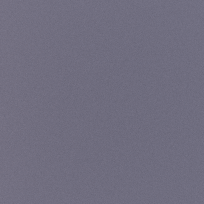 |
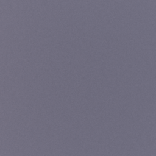 |
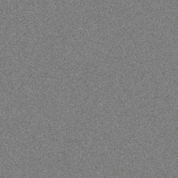 |
| nori-dxr (ours) | Mitsuba 3 reference | False-color error (RMSE = 0.012) |
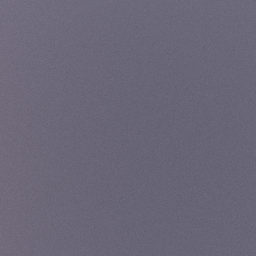 |
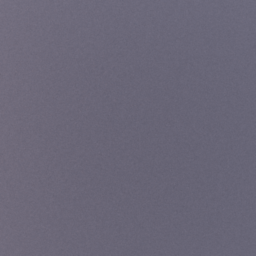 |
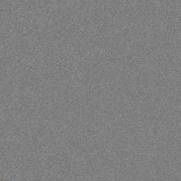 |
| nori-dxr (ours) | Mitsuba 3 reference | False-color error (RMSE = 0.012) |
 |
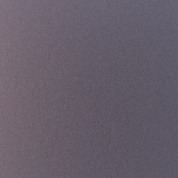 |
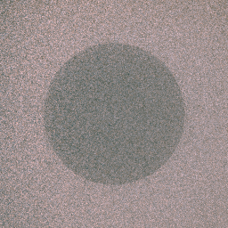 |
| nori-dxr (ours) | Mitsuba 3 reference | False-color error (RMSE = 0.042) |
I put every mesh together in Blender to layout the general scene. I exported each mesh in Blender as its own object as a triangulated mesh. This is a good time saving hack because it keeps all the world coordinates consistent across the scene. I don't know Blender at all, so I spent about 100 hours in this software (amazing.)
Figure 1: Blender Hell

Figure 2: The final rendered scene after denoising with Intel Open Image Denoiser.